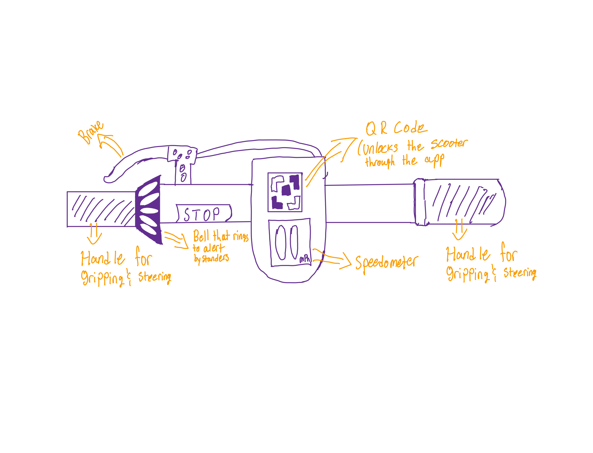

Personas and Storyboarding
Spin Scooter Interface
About the Project
The Personas and Storyboarding project is the first project in the course CSCI 1300.
We were tasked with stepping into the shoes of a user of a choosen public interface around Brown University's campus. We observed real users interacting with our chosen interface, interviewed these individuals about their experiences, created personas based on these users, and illustrated a storyboard for one of these personas.
I chose the Spin Scooter Interface!
Spin Scooter Interface

This interface is one answer to the question: What makes an intuitive electric scooter interface?
Its key components are the handlebars, the qr code, the speedometer, the brake, and the bell.
- The handlebars allow the user to steer the scooter, and maintain balance during the ride.
- The qr code interacts with the Spin mobile app, allowing the user to unlock the scooter or to alert the user that the scooter is damaged or has a low battery.
- The speedometer simply tells the user how fast they’re currently moving.
- The brake allows the user to slow down or bring the scooter to a complete stop.
- Finally, the bell allows the user to alert bystanders and other vehicles or riders of their presence, avoiding potential accidents caused by a lack of awareness.
Observations
There are a few broad observations I made regarding user interactions with the Spin scooter interface.
- If a user hadn’t used the scooter before, they may try to push off without lifting the kickstand that props the scooter up.
- Every person who used the scooter during my observations could infer that their hands would go on the handlebars.
- Once their hands were on the handlebars, their left hand would naturally reach for the brake since it fits snuggly into the hand.
- The thumb can rest on the bell, so that was also easy for the user to discover.
There’s a big difference between older users and younger users. Younger users, like the college students that occupy most of the campus, were familiar with qr codes, and quickly scanned them with their phones using the Spin app, unlocking the scooter. Older users, however, were more likely to get stuck at the first step of scanning the scooter’s code, likely because they weren’t familiar with the technology.
Personas
Based on these observations, I created empathy maps for two personas representing the primary populations: busy college students and unfamiliar elders.
Aided Elder
Composite of student responses
For older users, the main problem with the interface is that they can’t tell whether the scooter is
ready to use or is locked.
While not the primary audience of the Spin scooter, the vehicle should be able to accommodate various
bodies of differing ages and backgrounds.
If there are populations who cannot understand how to use
the scooter, then there are gaps in the user interface that need to be addressed.
Stressed Student
Composite of student responses
“A college junior that’s rushing to an important class they’re late for.”
For the students, the main problem with the interface relates to how busy they are. When they're in a rush, it would be beneficial to tell when the scooter is broken or has low battery without opening the Spin app to avoid wasting time in their busy schedule.
Why & How the persona represents the users:
- Most of the users of these scooters are busy college students.
- It wouldn’t represent the majority population in the area if this persona was left out

Storyboard
Below I've created a slideshow to display my storyboards for the Aided Elder persona where we edit the interface to behave for explicitly for new users.
Press the right arrow to look at each frame.